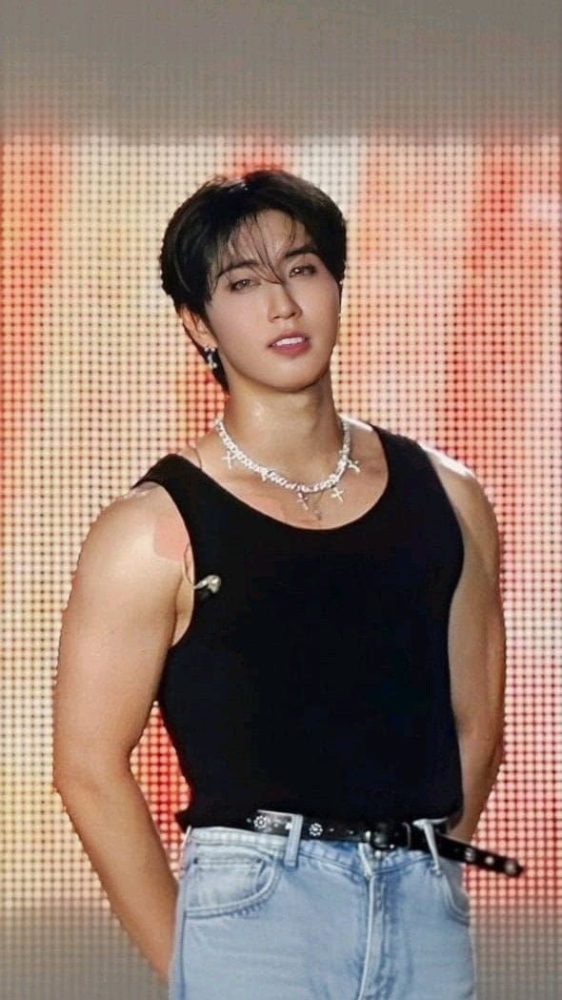

Han Ji Sung (한지성)
Perfil del Artista
Temas para K-Dramas (OST)
Updraft - Tema oficial para Typhoon Family (2025)
Programas de Televisión
King of Mask Singer (MBC, 2019) Ep. 197
Stray Kids (Mnet, 2017) - Programa de supervivencia
Programas de Radio
(SBS) Power FM Young Street radio (15.04.2019) (Junto a Hyun Jin, Felix y Seung Min)
(SBS Radio) NCT Night Night (15.11.2018) (Junto a Seung Min, I.N, Felix y Hyun Jin)
Curiosidades
Estudios: R.E.A.L International School (Malasia).
Periodo de entrenamiento: 3 años (Ingresó en las audiciones de diciembre de 2015).
Modelo a seguir: Zico de Block-B.
Instrumentos: Guitarra y piano.
Idiomas: Coreano (Materno), Inglés (Básico), Malayo (Básico).
Comidas favoritas: Postres, como el cheesecake y el pastel de chocolate.
Color favorito: Rojo.
Vivió en Malasia durante 6 años de su infancia y adolescencia, donde estudió en un colegio bilingüe.
Llegó a un acuerdo con sus padres: si no entraba en una agencia musical en el plazo de un año, regresaría a Malasia para continuar sus estudios académicos.
Perteneció a la academia de baile y rap "DEF Academy".
Es uno de los "all-rounders" más admirados de la industria, con una capacidad vocal y rapidez de rap asombrosas.
Posee más de 107 canciones acreditadas formalmente con derechos de autor a su nombre ante la KOMCA, convirtiéndose en el idol más joven de la 4ª generación de K-Pop en superar las 100 canciones registradas.
Galería de Fotos

